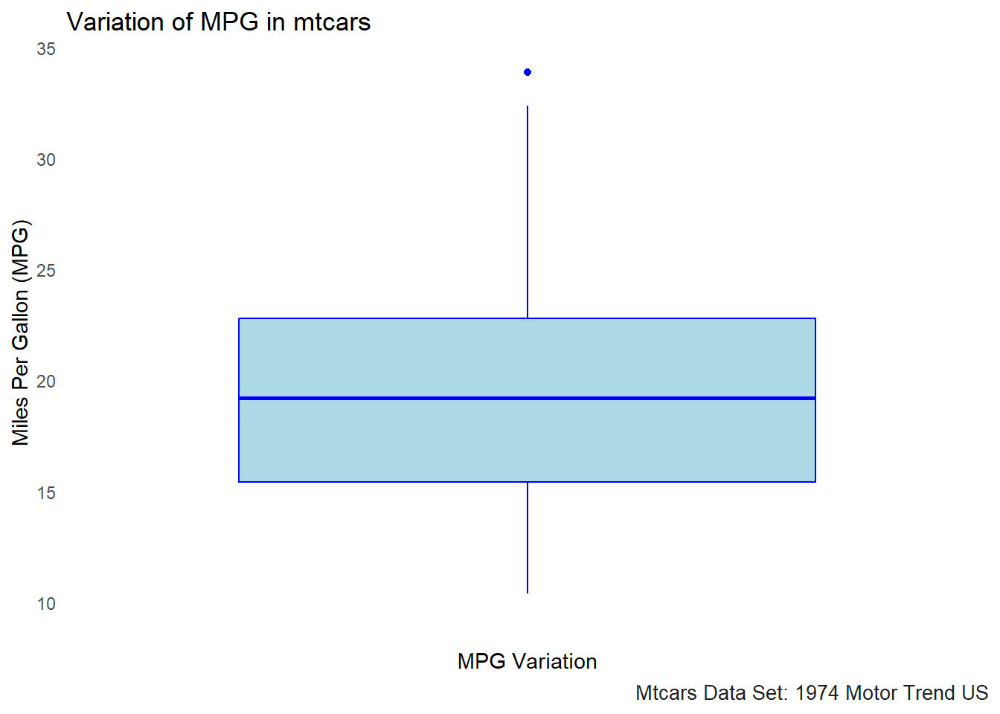
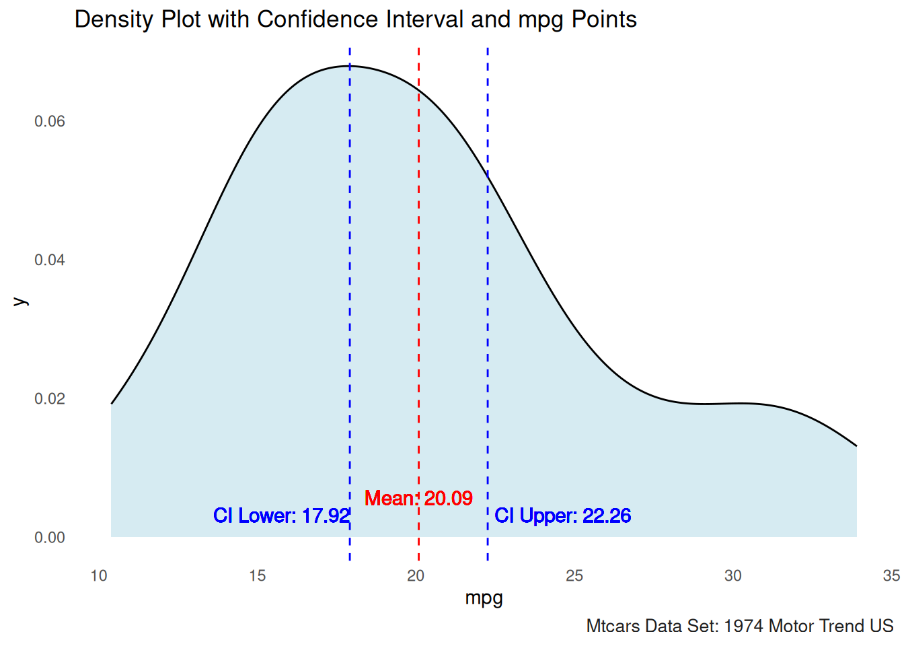

## 'data.frame': 32 obs. of 11 variables:
## $ mpg : num 21 21 22.8 21.4 18.7 18.1 14.3 24.4 22.8 19.2 ...
## $ cyl : num 6 6 4 6 8 6 8 4 4 6 ...
## $ disp: num 160 160 108 258 360 ...
## $ hp : num 110 110 93 110 175 105 245 62 95 123 ...
## $ drat: num 3.9 3.9 3.85 3.08 3.15 2.76 3.21 3.69 3.92 3.92 ...
## $ wt : num 2.62 2.88 2.32 3.21 3.44 ...
## $ qsec: num 16.5 17 18.6 19.4 17 ...
## $ vs : num 0 0 1 1 0 1 0 1 1 1 ...
## $ am : num 1 1 1 0 0 0 0 0 0 0 ...
## $ gear: num 4 4 4 3 3 3 3 4 4 4 ...
## $ carb: num 4 4 1 1 2 1 4 2 2 4 ...A data frame with 32 observations on 11 (numeric) variables.
In this section, we will explore important concepts in statistical significance, focusing on calculating confidence intervals (C.I.) and understanding their interpretation, as well as effect sizes.
# Boxplot of mpg in mtcars
ggplot(mtcars, aes(x = "", y = mpg)) +
geom_boxplot(fill = "lightblue", color = "blue") +
labs(title = "Variation of MPG in mtcars", y = "Miles Per Gallon (MPG)", x = "MPG Variation") +
theme_minimal()+gonzo_theme()
The boxplot for MPG in the mtcars data set visualizes the variation in fuel efficiency across different cars. Here’s what we can interpret from the boxplot:
Median (Center Line): The thick horizontal line in the middle of the box represents the median value of MPG, which is the middle value when all the MPG values are ordered from smallest to largest. This gives us a sense of the “central tendency” or typical value for MPG in this dataset.
Interquartile Range (IQR): The box represents the interquartile range (IQR), which includes the middle 50% of the data. The top and bottom edges of the box represent the third quartile (Q3) and first quartile (Q1), respectively. This range gives us an idea of the spread of the central half of the data.
Whiskers: The lines extending from the box (called whiskers) show the range of values within 1.5 times the IQR from the quartiles. These lines help to visualize the spread of data, excluding outliers.
Outliers: Points that fall outside of the whiskers (typically shown as individual dots) are considered outliers. These are values that are significantly different from the rest of the data. For example, the MPG values for cars with extreme fuel efficiency or inefficiency could appear as outliers in this plot.
The sample standard deviation (S) is a measure of the spread of values in a sample and is calculated as:
\[\large S\;=\;\sqrt{\frac{\sum(X\;-\;{\overline{X}})^2}{N\;-1}} \]
N <- length(mtcars$hp)
deviations <- mtcars$hp-mean(mtcars$hp)
s <- deviations^2
m_plus<- sum(s)/(N-1)
sd_plus <- sqrt(m_plus)
print(sd_plus)## [1] 68.56287## [1] 68.56287## [1] 68.56287\[\large SE\;\;=\frac{\sigma}{\sqrt{n}} \]
\[ SE\;=Standard\;Error \\ \sigma\;=sample\;standard\;deviation \\ n\;=number\;of\;samples \]
The standard error (SE) quantifies the uncertainty of a sample mean estimate. It is calculated using:
#standard deviation/squareroot(n)
# length(mtcars$hp)
# nrow(mtcars)
###Shortcut to calculate the standard error of a sample
###The length function is utilized to find the number of observations in a data set
sd(mtcars$hp)/sqrt(length(mtcars$hp))## [1] 12.12032####Another shortcut to calculate the standard error of a sample
###The nrow function is utilized to find the number of observations in a data set
sd(mtcars$hp)/sqrt(nrow(mtcars))## [1] 12.12032####Long way to calculate the standard error of a sample
print(sqrt(sum((mtcars$hp - mean(mtcars$hp)) ^ 2/(length(mtcars$hp) - 1)))
/sqrt(length(mtcars$hp)))## [1] 12.12032The confidence interval (C.I.) according to (Hatcher, 2013) gives us a range of values for the population parameter being estimated.
Computed for:
The formula for calculating the confidence interval of the sample mean is:
\[\large CI\;=\;\overline{X}\;\pm\;(SE_{m})(t_{crit}) \]
\[ CI\;=Confidence\;Interval \\ \overline{X}\;=\;observed\;sample\;mean \\ SE_{m}\;=standard\;error\;of\;the\;mean \\ t_{crit}\;=\;the\;critical\;value\;of\;the\;t\;statistic \]
###Calculate the mean of the hp
mean_hp <- mean(mtcars$hp)
print(paste0("Mean of horsepower: ",mean_hp))## [1] "Mean of horsepower: 146.6875"###Calculate the sd of the hp
sd_hp <- sd(mtcars$hp)
print(paste0("Standard deviation of horsepoweer: ",sd_hp))## [1] "Standard deviation of horsepoweer: 68.5628684893206"## [1] 5.656854### Degrees of freedom (df) for t-distribution
df <- length(mtcars$hp) - 1 # 32 observations, so df = 32 - 1 = 31
###Confidence level of 0.95% e.g. two-tailed with 2.5%
t_value <- 1.96
###How to calculate the t-value properly
###Take the p-value: 0.05 and the degrees of freedom: 32-1
tval <- abs(qt( (1-0.95) / 2, df = df))
print(paste0("t-critical value: ",tval))## [1] "t-critical value: 2.03951344639641"###Standard error of the sample mean
se_sample_mean <- (sd(mtcars$hp)/sqrt(length(mtcars$hp)))
print(paste0("Standard Error of the Sample Mean: ",se_sample_mean))## [1] "Standard Error of the Sample Mean: 12.1203173116"## [1] 12.12032## [1] 121.9679# Calculate the mean and confidence interval
mean_val <- mean(mtcars$hp)
ci_lower <- mean(mtcars$hp)-(se_sample_mean*tval)
ci_upper <- mean(mtcars$hp)+(se_sample_mean*tval)
# Plot with shaded confidence interval and hp points
ggplot(mtcars, aes(x = hp)) +
geom_density(fill = "lightblue", alpha = 0.5) + # Density plot
geom_vline(xintercept = mean_val, color = "red", linetype = "dashed") + # Mean line
geom_vline(xintercept = ci_lower, color = "blue", linetype = "dashed") + # Lower CI line
geom_vline(xintercept = ci_upper, color = "blue", linetype = "dashed") + # Upper CI line
# geom_point(aes(x = hp, y = rep(0, length(`hp`))), color = "darkgrey", alpha = 0.5) + # Points
theme_minimal() +
labs(title = "Density Plot with Confidence Interval and HP Points")+
# Adding text annotations for the mean and CI lines with adjusted y position
geom_text(aes(x = mean_val, y = 0.0025, label = paste("Mean:", round(mean_val, 2))),
color = "red", vjust = -1)+
geom_text(aes(x = ci_lower, y = 0.0035, label = paste("CI Lower:", round(ci_lower, 2))),
color = "blue", vjust = -2, hjust = 1) +
geom_text(aes(x = ci_upper, y = 0.0015, label = paste("CI Upper:", round(ci_upper, 2))),
color = "blue", vjust = -1, hjust = -0.0)+gonzo_theme()# Calculate the mean and confidence interval
###Standard error of the sample mean
se_sample_mean <- (sd(mtcars$mpg)/sqrt(length(mtcars$mpg)))
mean_val <- mean(mtcars$mpg)
ci_lower <- mean(mtcars$mpg)-(se_sample_mean*tval)
ci_upper <- mean(mtcars$mpg)+(se_sample_mean*tval)
# Plot with shaded confidence interval and mpg points
ggplot(mtcars, aes(x = mpg)) +
geom_density(fill = "lightblue", alpha = 0.5) + # Density plot
geom_vline(xintercept = mean_val, color = "red", linetype = "dashed") + # Mean line
geom_vline(xintercept = ci_lower, color = "blue", linetype = "dashed") + # Lower CI line
geom_vline(xintercept = ci_upper, color = "blue", linetype = "dashed") + # Upper CI line
# geom_point(aes(x = mpg, y = rep(0, length(`mpg`))), color = "darkgrey", alpha = 0.5) + # Points
theme_minimal() +
labs(title = "Density Plot with Confidence Interval and mpg Points")+
# Adding text annotations for the mean and CI lines with adjusted y position
geom_text(aes(x = mean_val, y = 0.0025, label = paste("Mean:", round(mean_val, 2))),
color = "red", vjust = -1)+
geom_text(aes(x = ci_lower, y = 0, label = paste("CI Lower:", round(ci_lower, 2))),
color = "blue", vjust = -1,hjust=1) +
geom_text(aes(x = ci_upper, y = 0, label = paste("CI Upper:", round(ci_upper, 2))),
color = "blue", vjust = -1,hjust = -0.05)+gonzo_theme()
Here we can also calculate the \(CI\) by utilizing the linear model funciton.
## [1] 170.4433##
## Call:
## lm(formula = hp ~ 1, data = mtcars)
##
## Residuals:
## Min 1Q Median 3Q Max
## -94.69 -50.19 -23.69 33.31 188.31
##
## Coefficients:
## Estimate Std. Error t value Pr(>|t|)
## (Intercept) 146.69 12.12 12.1 2.79e-13 ***
## ---
## Signif. codes: 0 '***' 0.001 '**' 0.01 '*' 0.05 '.' 0.1 ' ' 1
##
## Residual standard error: 68.56 on 31 degrees of freedom## 2.5 % 97.5 %
## (Intercept) 121.9679 171.4071According to Hatcheer (2013) an index of effect size is a numeric representation of the strength of a relationship between an independent (predictor) and dependent (criterion) variable. One way to compute the index of effect or effect size is by using Cohen’s d.
Here we are looking at the standardized difference index of effect size which indicates the size of the difference between two means, as measured in standard deviation. (Hatcher 2013)
The formula for calculating the Cohen’s d statistic is as follows:
\[ d =\frac{\overline{X}_{1}\;-\overline{X}_{2}}{S_{p}} \]
\[ d\;=Cohen's\;d\;statisitc \\ \overline{X}_{1}\;=\;Sample\;mean\;group\;one \\ \overline{X}_{2}\;=\;Sample\;mean\;group\;two \\ S_{p}\;=\;Pooled\;estimate\;of\;the\;population\;standard\;deviation \]
The formula for the pooled standard deviation is as follows
\[ S_{p}\;=\;\sqrt{\frac{(n_{1}-1)s^2_{1}\;-(n_{2}-1)s^2_{2}}{n_{1}+n_{2}-2}} \]
| d | Size of the effect |
|---|---|
| Cohen’s d | Interpretation |
| ±0.2 | Small effect |
| ±0.5 | Medium effect |
| ±0.8 | Large effect |
| > ±1.0 | Very large effect |
Note: Cohen’s (1988) Criteria for Interpreting the Size of the d Statistic.
Here is an example of comparing the means of two groups utilizing the mtcars data set. We are looking at the type of engine shape V-shaped that is typical to an automatic transmission and also the Straight line engine that is typically associated with a manual transmission.
mpg_v_shape <- mtcars$mpg[mtcars$vs == 0] # V-shaped engine (typically associated with automatic transmission)
mpg_straight <- mtcars$mpg[mtcars$vs == 1] # Straight engine (typically associated with manual transmission)
# Means
mean_v_shape <- mean(mpg_v_shape)
mean_straight <- mean(mpg_straight)
# Standard deviations
sd_v_shape <- sd(mpg_v_shape)
sd_straight <- sd(mpg_straight)
# Sample sizes
n_v_shape <- length(mpg_v_shape)
n_straight <- length(mpg_straight)
# Pooled standard deviation
s_p <- sqrt(((n_v_shape - 1) * sd_v_shape^2 + (n_straight - 1) * sd_straight^2) / (n_v_shape + n_straight - 2))
# Cohen's d
cohen_d <- (mean_straight - mean_v_shape) / s_p
cohen_d## [1] 1.733415In this case, Cohen’s d is calculated to be 1.73, which indicates a large effect size, >.08. This suggests a significant difference between the means of the two groups—V-shaped engines (vs == 0) and Straight line engines (vs == 1). A Cohen’s d value greater than 0.8 is generally interpreted as a large effect, so this result strongly indicates that the MPG difference between cars with V-shaped and Straight line engines is notable.
This large effect suggests that the engine type (V-shaped vs. Straight line) has a meaningful impact on the fuel efficiency (mpg) of the vehicles in the mtcars dataset.
A t-test is used to determine if there is a significant difference
between the means of two groups. In this example, we will compare the
miles per gallon (mpg) of cars with automatic vs. manual
transmissions in the mtcars dataset.
We will perform an independent t-test to test these hypotheses.
# Load necessary libraries
library(dplyr)
# Create a new variable 'am' for automatic (0) vs. manual (1) transmissions
mtcars$am <- factor(mtcars$am, levels = c(0, 1), labels = c("Automatic", "Manual"))
# Perform t-test to compare mpg between automatic and manual cars
t_test_result <- t.test(mpg ~ am, data = mtcars)
# Display the t-test result
t_test_result##
## Welch Two Sample t-test
##
## data: mpg by am
## t = -3.7671, df = 18.332, p-value = 0.001374
## alternative hypothesis: true difference in means between group Automatic and group Manual is not equal to 0
## 95 percent confidence interval:
## -11.280194 -3.209684
## sample estimates:
## mean in group Automatic mean in group Manual
## 17.14737 24.39231Explanation:
Statistical Method: A t-test was performed using the t.test() function to assess if the difference in mpg between the two groups is statistically significant.
Key Result: The p-value is less than 0.05, indicating a significant difference between automatic and manual transmissions in terms of mpg.
Conclusion: There is a significant difference in mpg between cars with automatic and manual transmissions, with one likely being more fuel-efficient than the other.
Due to this data set being from the year 1974 it is logical to see the Manual transmissions getting better gas mileage than the Automatic transmissions.
Hatcher, L. (2013). Advanced statistics in research: Reading, understanding, and writing up data analysis results. Shadow Finch Media.
https://www.statology.org/t-distribution-table/
https://www.scribbr.com/frequently-asked-questions/critical-value-of-t-in-r/#:~:text=You%20can%20use%20the%20qt,the%20significance%20level%20by%20two.